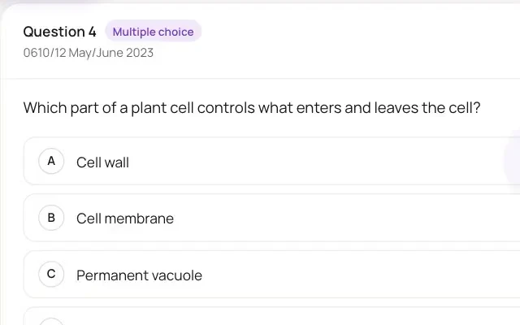

Real past-paper questions, checked as you answer.
Every question shows the paper it came from. Get one wrong and Klaro shows the right answer and where it was explained.


Get one wrong, and see where it was explained
This is a real practice question from a sample Biology course. Pick a wrong answer on purpose: Klaro shows the right one, then the page in the book and the moment in the lecture that explain it.
A real practice question from a sample Biology course: a wrong answer, the right one, then the page in the book and the moment in the lecture that explain it.
Powered by research. Students who practised recalling a passage remembered more of it a week later than students who read it again.
Roediger, H. L., & Karpicke, J. D. (2006). Test-enhanced learning: Taking memory tests improves long-term retention. Psychological Science, 17(3), 249–255. https://doi.org/10.1111/j.1467-9280.2006.01693.x

- Your turn. Answer one wrong on purpose.
- Practise past-paper questions from your course.
- Not quite. Klaro shows the right answer…
- …and where it was explained: the page in your book and the moment in your lecture.
- One tap, and your tutor explains it.
Real past papers
Every question says where it's from
Paper, year and series, on every question. The right answer comes from that paper's own mark scheme.
Questions are filed under your course book's chapters, so you can practise what you've just studied.
Practise beside the lecture in the study view
Your practice
Build your own set
Choose what to practise and how. Practice never counts against you.
- Chapters
- Any chapters and sections of your course book.
- Papers
- The exam paper, the year and the series.
- How many
- 5, 10 or 20 questions, or keep going.
- A timer
- If you want one.
- Where to look
- After each answer, the page in your book and the moment in your lecture. On unless you turn it off.
FAQ
What students and parents ask
From real past papers. Each question shows the paper it came from: paper, year and series. The right answer comes from that paper's own mark scheme.
Multiple-choice answers are checked the moment you answer. Get one wrong and Klaro shows the right answer, then the page in your book and the moment in your tutor's lecture that explain it.
Not yet. Written questions aren't marked in practice: check your answer against the book and the lecture.
No. Practice is never marked and never counts against you. Your average mark comes from your tutor's quizzes.
Free while in beta
Get it wrong here, not in the exam.
Your tutor's explanation. Not a guess.
Create your account, then join with the code your tutor gives you.